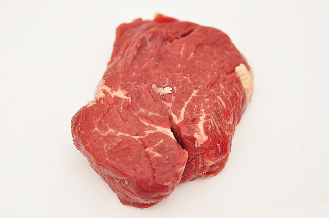
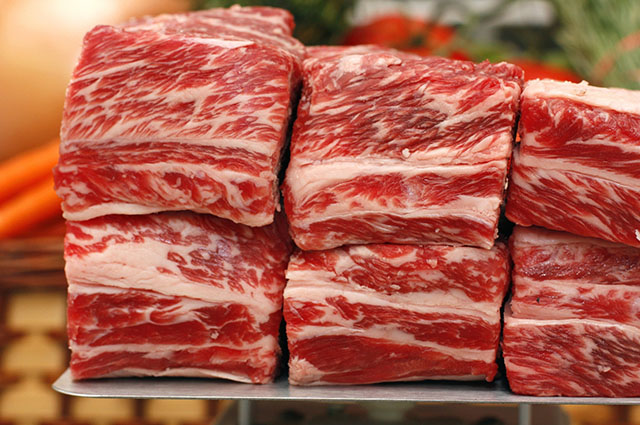
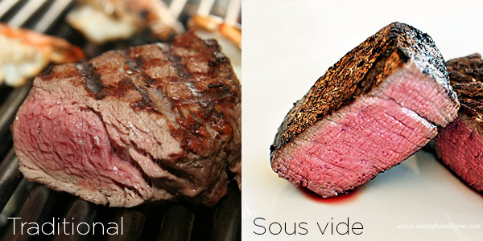
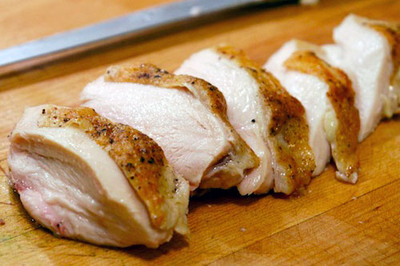
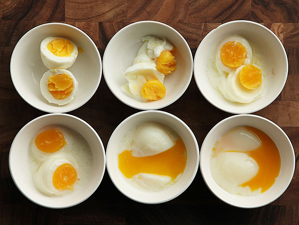
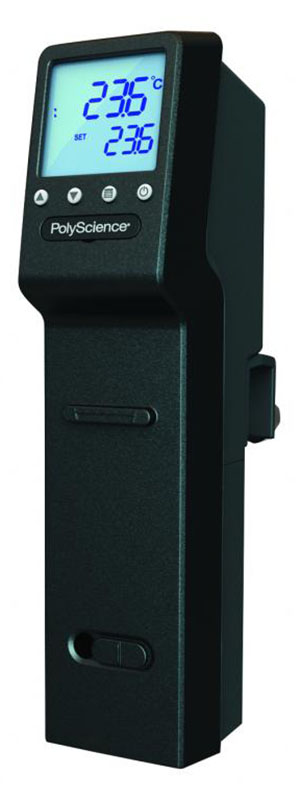
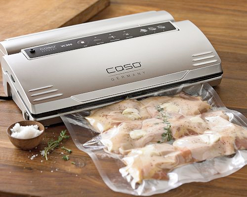
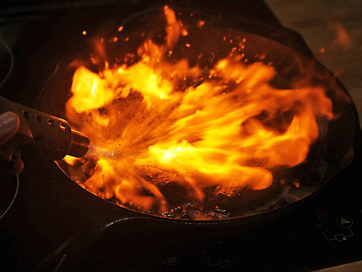
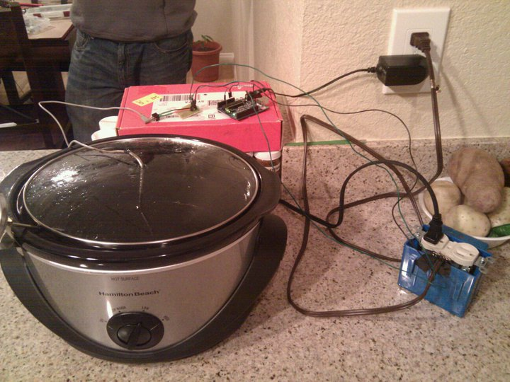
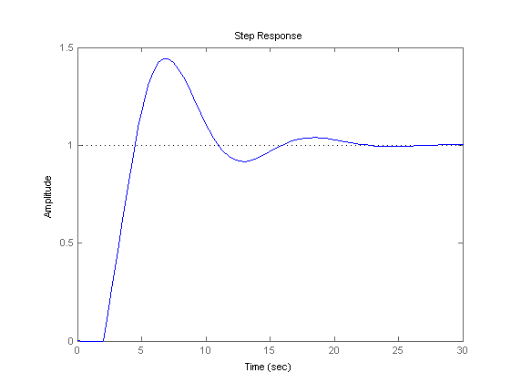

Sous Vide For Hackers
How to cook a steak with science
Created by Tyson Anderson / @tysonanderson
Sous vide:
French for "under vacuum"
More importantly: It's a method of cooking food (usually) sealed in plastic bags in a temperature-controlled water bath
What are some benefits of sous vide?
- Tender meat from slow/low cooking
- Temperature uniformity
- Accuracy
- Time-at-temperature pasteurization
Tenderness vs. Flavor
 Tender meat from slow/low cooking
Collagen
Gelatin
Temperature uniformity
Time-at-temperature pasteurization
Accuracy
Source: The Food Lab's Guide to Slow-Cooked, Sous-Vide-Style Eggs
Equipment
Immersion circulator
$400 - $1000+

$400+
$50 - 100
Vacuum sealer
Food Safety
- Anaerobic environments can breed the most dangerous bacteria
- Food can be in the danger zone (40 - 140) for a longer period of time
- Food must be either served immediately or chilled immediately when finished
- Make sure the food comes to temperature within two hours
Searing food
Additional uses of an immersion circulator
- Tempering/melting chocolate
- Custard
- Yogurt
Recipes to try:
Part 2
Building a sous vide controller
Version 0.0.1
What is a PID controller?
(P)roportional-(I)ntegral-(D)erivative
A PID controller sets its output based on how far its current value is from the target value.
Part list
| PID controller | $28.99 |
| Solid-state relay | $7.99 |
| Thermocouple | $7.84 |
| Power socket | $1 |
| Power inlet | $1 |
| Power cord | Free |
| Heatsink | Free |
| Fuse 10A | $1 |
| Screws(4) | $1 |
| Nuts(4) | $1 |
| Total: | $48.18 |
WARNING:
AC mains power can kill you. If you don't know what you are doing, ask someone who does for help.